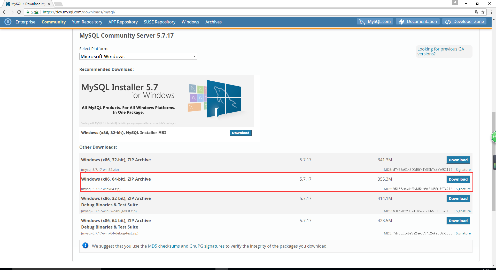
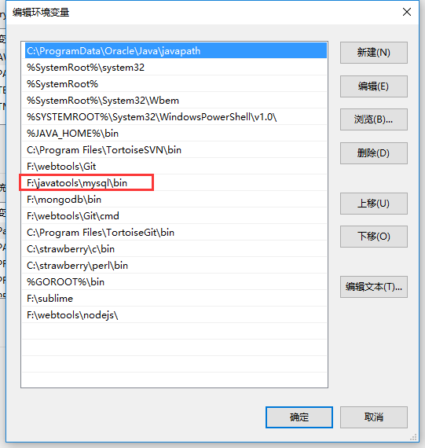
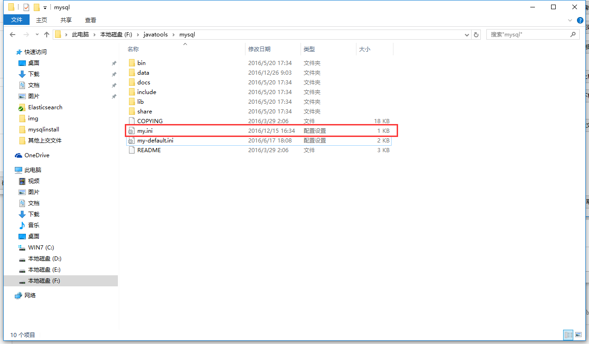
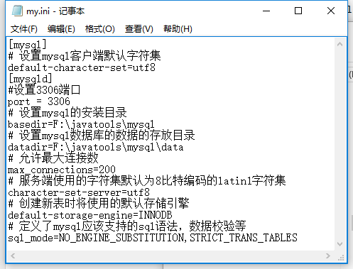
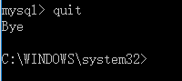
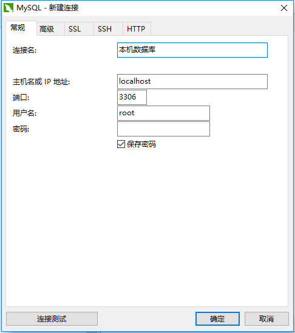

mysql 安装教程
本教程讲解最简单的mysql安装教程。
下载压缩包
注意：根据自己电脑的位数选择下载32位或者64位 
解压到相应文件夹中
本人是解压到F:\javatools文件夹下，并将文件夹名字改为了mysql。
配置环境变量
配置环境变量，在path中放入：F:\javatools\mysql\bin; 
增加配置文件
复制一份my-default.ini文件出来并重命名为my.ini  具体配置为如下：
[mysql]
# 设置mysql客户端默认字符集
default-character-set=utf8
[mysqld]
#设置3306端口
port = 3306
# 设置mysql的安装目录
basedir=F:\javatools\mysql
# 设置mysql数据库的数据的存放目录
datadir=F:\javatools\mysql\data
# 允许最大连接数
max_connections=200
# 服务端使用的字符集默认为8比特编码的latin1字符集
character-set-server=utf8
# 创建新表时将使用的默认存储引擎
default-storage-engine=INNODB
# 定义了mysql应该支持的sql语法，数据校验等
sql_mode=NO_ENGINE_SUBSTITUTION,STRICT_TRANS_TABLES
 注意：将相关的路径设置为何自己电脑匹配的路径
进入命令窗口（注意：以管理员身份进入）
进入到mysql的bin目录
cd F:\javatools\mysql\bin
初始化数据库
命令：mysqld --initialize #直接初始化mysql，生成data文件夹中的文件。
安装数据库
命令：mysqld -install #安装mysql
启动数据库服务
命令：net start mysql #启动服务器
登录
第一次登录不用输入密码，一路回车往下，就会进入mysql
mysql -u root -p
退出
在mysql中输入quit，然后回车
mysql>quit

mysql图形化界面安装
本次我们安装的图形化界面为Navicat Premium
下载Navicat Premium
Navicat Premium下载地址 提取码： ygra 接下来和其他游戏安装一抹一样，一直下一步。
用Navicat Premium链接数据库
 链接测试成功后，既可连入数据库。